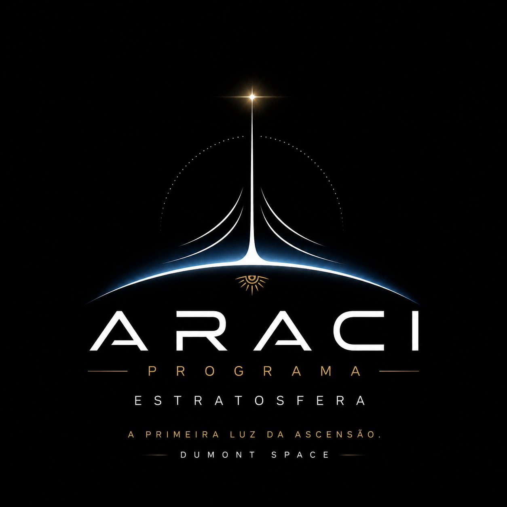

Iniciativa aeroespacial experimental voltada ao desenvolvimento de plataformas estratosféricas, sistemas embarcados e tecnologias atmosféricas avançadas.
Sobre a Dumont Space
A Dumont Space é uma iniciativa aeroespacial experimental brasileira dedicada ao desenvolvimento de sistemas, plataformas e tecnologias aeroespaciais independentes. Nossa filosofia une engenharia séria, exploração científica e evolução incremental rumo às futuras fronteiras aeroespaciais.
Desenvolvemos telemetria, sistemas embarcados, plataformas híbridas, exploração atmosférica, recuperação inteligente, autonomia e engenharia modular — tudo orientado à validação em campo e construção de experiência operacional real.
Capacidades Tecnológicas
Infraestrutura tecnológica modular desenvolvida para suportar missões aeroespaciais experimentais reais.
Desenvolvimento iterativo de hardware e software aeroespacial com foco em validação prática e evolução incremental em campo real.
Sistemas de aquisição, transmissão e monitoramento de dados em tempo real via RF, LoRa e protocolos redundantes de comunicação.
Plataformas de alta altitude para operar em ambiente estratosférico extremo, com pressão reduzida, frio intenso e radiação elevada.
Arquitetura modular baseada em microcontroladores de baixo consumo, firmware robusto e integração multi-sensor para ambientes hostis.
Sistemas de recuperação de payload com lógica autônoma, redundância estrutural, GPS ativo e sequência de descida controlada.
Lógica de decisão embarcada com supervisão remota, failsafe configurável e gestão autônoma de energia e comunicação.
Programas Aeroespaciais
Iniciativas estruturadas para o desenvolvimento progressivo de tecnologias aeroespaciais brasileiras.

Exploração Estratosférica Experimental
Primeiro grande programa aeroespacial da Dumont Space, focado no desenvolvimento progressivo de tecnologias atmosféricas, plataformas near-space e sistemas embarcados de alta altitude.
Programa Aeroespacial
O Programa Araci é a primeira grande etapa da jornada aeroespacial da Dumont Space — a fundação tecnológica que permitirá evoluções progressivamente mais ambiciosas rumo à estratosfera e além.
"Antes do espaço, existe a ascensão."
O nome Araci tem raízes na língua Tupi e remete à mãe do dia — aurora, nascimento da luz, início do céu iluminado. A estratosfera é tratada como o primeiro território aeroespacial da Dumont Space.
A filosofia central: dominar a atmosfera antes do espaço. Desenvolver tecnologia camada por camada, validar sistemas progressivamente, construir infraestrutura própria e criar conhecimento aeroespacial real.
OBJETIVOS — domínio atmosférico · telemetria · sistemas embarcados
near-space · autonomia · recuperação inteligente · alta altitude
"O céu é apenas o começo."
Roadmap do Programa
Seis fases progressivas, cada uma construindo sobre a anterior rumo ao domínio estratosférico completo.
Desenvolvimento e validação completa de todos os subsistemas em ambiente terrestre controlado antes da primeira missão de voo.
Primeiros voos de teste em baixa altitude para validação de recuperação, tracking, telemetria e comportamento de voo real.
Entrada no regime de alta atmosfera. Validação sob condições de frio extremo, pressão reduzida e comunicação de longa distância.
Milestone oficial do Programa Araci. A missão Araci S-01 marca a primeira entrada da Dumont Space no regime estratosférico — evento histórico da organização.
Operação contínua no envelope estratosférico com foco em estabilidade de sistemas, autonomia prolongada, redundância e recuperação avançada.
Domínio completo do envelope estratosférico. Near-space, arquitetura madura e envelope expansion rumo às fronteiras do espaço.
Operações
Sequência completa de missões de bancada da Fase 0 — validação terrestre progressiva antes dos primeiros voos.
Primeiro teste LoRa — envio, recepção, RSSI, latência e integridade de pacotes em solo.
Comunicação estável em solo
Validação de BME280, IMU e leitura contínua de sensores ambientais.
Leitura estável e coerente
Validação de gravação em SD — integridade, timestamps, corrupção e recuperação de arquivos.
Logs persistentes sem corrupção
Validação do GPS NEO-M8N — aquisição de satélites, estabilidade, precisão, cold e hot start.
Fix confiável e repetível
Validação da arquitetura energética completa — reguladores, ripple, consumo, autonomia e aquecimento.
Estabilidade energética completa
Primeiro teste de coexistência RF — LoRa + GPS e ESP32, com avaliação de ruído elétrico.
GPS continua funcional com LoRa ativo
Primeira ativação do VTX FPV — vídeo, alcance, temperatura e alimentação.
Transmissão estável
Teste RF completo com coexistência de VTX, GPS, LoRa e ESP32 simultâneos.
Operação simultânea funcional
Primeira integração física real — distribuição interna, centro de massa, cabeamento e ventilação.
Arquitetura física coerente
Avaliação de aquecimento interno — VTX, reguladores e bateria em operação real.
Temperaturas em limites aceitáveis
Operação contínua de várias horas — estabilidade, travamentos, resets e watchdog.
Operação contínua estável
Validação de nichrome, acionamentos, MOSFETs e lógica de emergência do sistema de recuperação.
Acionamento confiável e repetível
Primeira estação de solo funcional — recepção, interface, mapas e logging operacional.
Acompanhamento operacional em tempo real
Primeira integração COMPLETA — GPS, LoRa, sensores, VTX, SD, energia e firmware todos ativos.
Sistema completo funcional
Simulação de missão em movimento — veículo, deslocamento, tracking e RF dinâmico.
Telemetria funcional em movimento
Primeira operação completa em campo — checklist, energização, operação e recuperação simulada.
Operação organizada e documentada
Simulação de falhas reais — perda de GPS, reset, queda de LoRa e brownout de energia.
Comportamento previsível em falha
Missão final da Fase 0 — validação de maturidade da arquitetura, estabilidade geral e prontidão para voo.
Sistema pronto para a Fase 1
Primeiro voo de altitude real. Validação de recuperação, tracking GPS e telemetria ao vivo em ambiente de voo.
A missão histórica. Primeira entrada da Dumont Space no regime estratosférico — cruzar a barreira dos 12 km.
Plataforma Experimental
Plataforma híbrida drone-balão composta por quatro subsistemas integrados: Harpia I, AspSat, Balão estratosférico e Paraquedas.
A Sonda Araci-1 é uma plataforma híbrida drone-balão projetada para exploração estratosférica. Quatro subsistemas trabalham em sequência para garantir lançamento, ascensão, descida e pouso seguros.